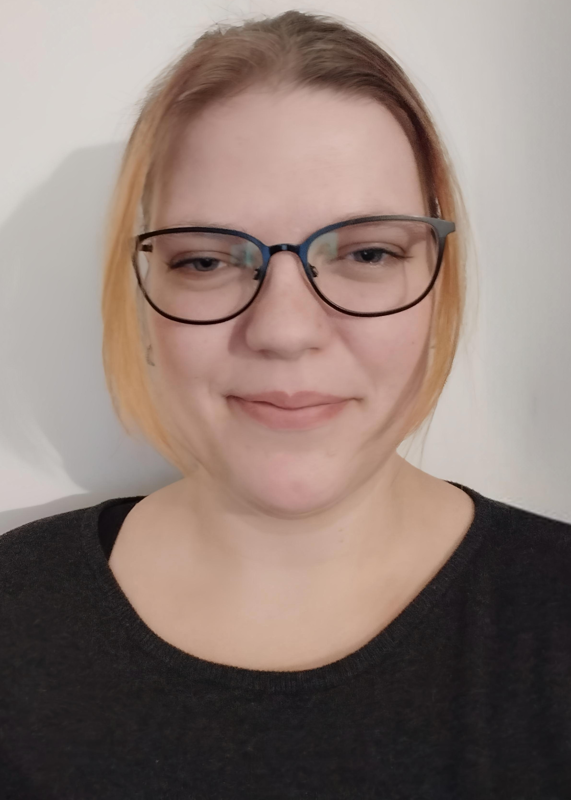

Om Mig

Hej, jeg hedder Sofie!
Jeg læser til softwareingeniør på VIA University College.
Jeg har tidligere uddannet mig til ingeniør i Velfærdsteknologi på SDU og har gennem både uddannelse og arbejde
beskæftiget mig med teknologi, digitalisering og brugercentrerede løsninger.
Min baggrund
Min interesse for teknologi har altid været tæt forbundet med mennesker og deres behov.
Gennem min tidligere uddannelse og mit arbejde har jeg blandt andet beskæftiget mig med digitalisering, implementering og udvikling af løsninger med fokus på brugeren.
Med tiden voksede min interesse for programmering og selve udviklingen af software, og derfor valgte jeg at begynde på Software Engineering.
Her arbejder jeg blandt andet med programmering og webudvikling og får mulighed for at kombinere min tekniske interesse med min kreative side.
Mine interesser
Når jeg ikke studerer, bruger jeg gerne tid på kreative projekter. Jeg hækler, strikker og maler og kan generelt godt lide at skabe ting fra bunden.
Jeg holder også meget af at læse, spille computer og fordybe mig i fantasyuniverser – og jeg er en kæmpe Harry Potter-nørd.
Jeg synes især, det er spændende, når teknologi, problemløsning og kreativitet kan kombineres i det samme projekt.